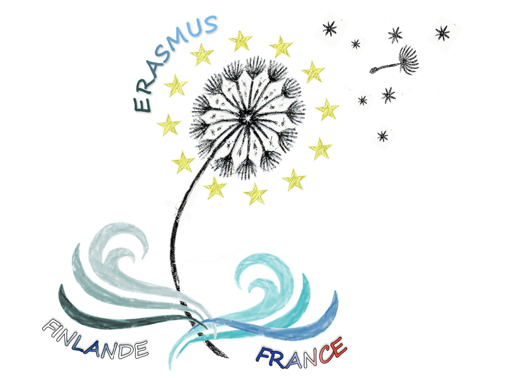

🐰 Connect Newsletter #36 - mars 2025
Wow - c'est déjà le numéro 36 de Connect. Quoi de neuf, quoi de nouveau ? Qui a été où, avec quoi, qui et comment ? Poursuivez, lecteur intrépide… Des merveilles vous attendent et des mystères vous guettent.
🎄Dans cette édition
👕 Dernière opportunité pour commander le t- shirt du collège 2025 !
Vous avez encore quelques jours pour acheter l'article de mode de cette année. Après, il sera officiellement trop tard !
helloasso.com - t-shirt-camille-claudel-2025

Logo gagnant de Margot Nicolas 5D pour le t-shirt 2025
Nous espérons que votre commande de t-shirts sera prête à être livrée après les vacances de printemps.
🎬Courts métrages au CDI
Chaque jeudi au CDI vous pouvez découvrir les courts métrages !
🌿Bioviva
Un spécialiste qui travaille à Bioviva est venu au collège à la rencontre des écodélégués et de quelques élèves de l’école primaire Berthe Morisot.
Il leur a fait tester un de leur nouveau jeu de la marque Bioviva : Bioviva Protect.
Puis, il a organisé un débat qui portait sur les espèces menacées.
De là, on a pu apprendre comment était mis en place le classement des cartes.
Plus l’animal est menacé, plus la carte est rare à trouver dans le jeu.
Les spécialistes qui créent les cartes Bioviva se basent sur le classement des espèces en voie d’extension, classement établi au niveau mondial.
Il nous a aussi expliqué comment étaient imprimées les cartes dans le respect de l’environnement avec du papier recyclé et de l’encre naturelle.
Nous avons aussi appris qu’une partie de l’argent collecté pour l’achat des jeux de cartes était reversé à des associations de protection des animaux.
Pour finir sur une bonne note, les élèves sont repartis avec un petit paquet de quatre cartes Bioviva dont une collector avec les bords brillants.
Une belle rencontre, très intéressante et amusante à la fois.
Margot NICOLAS 5D
🏉 Rugbymen au collège
Mardi 25 mars, deux classes de 3e du collège Camille Claudel ont vécu une expérience enrichissante en rencontrant Billy Vunipola, Jordan Uelese et Lottie Dadds ! Le trio anglo-saxon a partagé sa passion du rugby entièrement en anglais, permettant aux jeunes une immersion linguistique et sportive.

➕La semaine des maths au collège
Les cerveaux ont chauffé au collège à l’occasion de la semaine des maths.
Comme l’an dernier, un grand concours a été organisé avec chaque jour un nouveau défi à
relever.
Le thème national étant « Les maths hors les murs », les courageux qui ont osé relever les défis
ont eu à prendre des mesures dans la cour pour estimer la longueur du gymnase ou suivre un
jeu de piste. Ils sont aussi partis dans l’espace chercher des distances entre les planètes et ont
franchi les frontières du temps pour explorer une numération mésopotamienne.
Un grand bravo à tous les participants, et plus particulièrement à Margot NICOLAS (5D) et
Ivanhoé DESJARDINS (5C) qui ont remporté le concours chez les élèves. Du côté des adultes,
les grandes gagnantes sont Mme RAJA et Mme RIXTE.
Dans le prolongement de cette animation, les 5B ont aussi travaillé « hors la classe » en
réalisant des figures géométriques à la craie sur le sol du préau.
Et enfin, les élèves volontaires de 4ème ont participé aux Olympiades Mathématiques de
4ème : ils ont eu deux heures pour résoudre quatre problèmes et sont en concurrence avec
avec tous les collèges de l’académie. Rendez-vous en mai pour connaître leur classement !
Mme Lahondère
♿Différents comme tout le monde
Le mardi 18 mars, les 5eACD sont allés à la rencontre du handicap grâce à l'association "Différents comme tout le monde". Arrivés dans la salle, nous avons été accueillis par un monsieur très gentil en fauteuil roulant qui avait subi un grave accident de voiture à l'âge de 24 ans. Puis, on nous a montré une vidéo très touchante sur une fille qui a un petit frère autiste. Ensuite, nous avons commencé les activités. Chaque groupe en a fait 3 : certains ont pu utiliser un fauteuil roulant, la canne blanche ou encore le tandem pour aveugles. En ce qui me concerne, j'ai suivi l'atelier dyspraxie où il fallait mettre des gants de jardinage pour écrire ou pour enfiler des perles. Nous étions plusieurs à avoir ce trouble dans le groupe donc nous n'avons pas mis de gants et pour une fois, ce sont les autres qui écrivaient comme nous ! Ensuite, une personne sourde nous a un peu appris la langue des signes. Et pour finir, on a appris à écrire en braille grâce à 2 dames malvoyantes. En bref, c'était génial !
Mme Armengol
Mme Armengol
🇫🇮Projet Erasmus avec la Finlande

Logo de Louise 3B voté par les correspondants Finlandais
Nous sommes ravis de vous partager les résultats de notre concours logo pour notre projet Erasmus avec la Finlande. C'est le logo de Romane Fraysse 3B qui est arrivé en tête des votes à Camille Claudel, et celui de Louise Forté 3B qui a été élu par nos correspondants Finlandais. Bravo à elles !
Je rajoute que nos correspondants Finlandais seront parmi nous la semaine du 31 mars au 4 avril. Nous avons hâte de les rencontrer !
Mme Le Ny
Je rajoute que nos correspondants Finlandais seront parmi nous la semaine du 31 mars au 4 avril. Nous avons hâte de les rencontrer !
Mme Le Ny
🌈Badges pour l’égalité
Les élèves du club égalités, avec l'aide précieuse de Mme Lindet, ont réalisé des badges égalitaires lors de leur temps libre.
Ces badges ont été créés pour porter un message fort : le droit à l'égalité pour TOUS au collège Camille Claudel."
Marcus Derand, 5D
🏆Objet Trouvé
Personne n'a réussi à deviner l'identité de la personne mystère du mois dernier ! C'est pourquoi nous vous donnons une seconde chance. Regardez de près....qui cela peut-il être ?
Voici un/une professeur dans le flou… Pourtant la personne aide les élèves à y voir clair, saurez-vous trouver qui c'est ? Et où? Envoyez votre réponse à c4claudel@gmail.com. Tentez et gagnez - l’incroyable introuvable stylo design du collège, un prix unique, vous attend!
❤️Et finalement…

« Il faut toujours un hiver pour bercer un printemps. » (Anonyme)